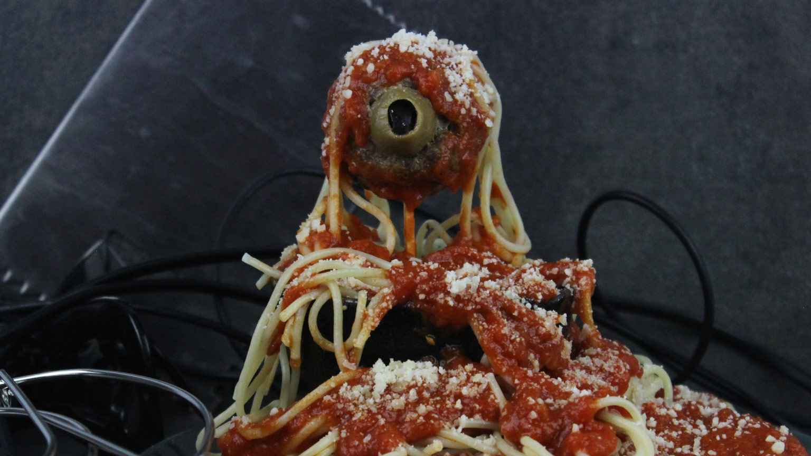

Dianoga Meatballs

MEATBALL INGREDIENTS:
- 1 lb. Ground beef
- 1 Large egg
- 1 Clove garlic, minced
- 1/4 Cup breadcrumbs
- 1 Teaspoon basil
- 1 Teaspoon oregano
- 1 Teaspoon onion powder
- 1/2 Teaspoon salt
- 1/4 Teaspoon pepper
- 12 Green olives
- 12 Thin slices black olives
- 1/4 Cup Parmesan cheese
- Spaghetti and marinara sauce, for serving
STEPS:
- Preheat the oven to 400 ̊F.
- Prep a baking sheet with non-stick spray.
- In a large bowl add the beef, pork, egg, garlic, breadcrumbs, basil, oregano, onion powder, salt and pepper. Mix together well.
- Wrap the meat mixture around an olive, leaving pitted side exposed. Place onto the prepped baking sheet.
- Bake for 20 minutes until browned, and cooked through.
- Use a small knife to cut a slit into the green olive. Insert a slice of black olive to create the eye.
- Place the meatballs on skewers.
- Serve with spaghetti and sauce. Sprinkle with Parmesan cheese.
Thanks goes to Admiral Achbars Snack Bar. Its not a trap! https://www.starwars.com/news/dianoga-meatballs